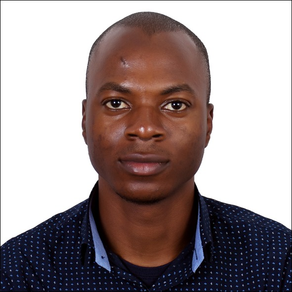

|
Meet Teslim Olayiwola
I am a PhD candidate in Chemical Engneering at the Louisiana State University, where I am advised by Jose Romagnoli and Revati Kumar. My research interest focus on the application of machine learning and molecular dyanmics in fuel cell design. Before my joining my present research group, I worked briefly on intermetallic synthesis and catalyst regeneration.
Prior to joining the PhD program, I earned my Bachelor's degree in Chemical Engineering and Masters' degree program in Petroleum Engineering from Ladoke Akintola University of Technology (LAUTECH) Nigeria and African University of Science and Technology (AUST) Nigeria, respectively.
During my undergraduate and graduate studies, I interned at Opex Oil and Gas Resources (assisgnment at Axxela) and Chevron Nigeria Limited, respectively. Also, I had a short research stinct at King Fahd University of Petroleum and Minerals where I worked on molecular dynamics simulations of polymers and surfactant systems and atomistic study of the effect of maturity on water intake in kerogen. While working on these projects, I collaborated with other students and published scientific articles on side projects involving machine applications in petrophysical and fluid studies.
If you have questions or are interested in my work, please reach me at my email (tolayi1 at lsu dot edu). I am always open to collaborations!
Email /
Resume /
Google Scholar /
GitHub /
Twitter
|

|
Recent Publications
-
Evolving strategies for shear wave velocity estimation: smart and ensemble modeling approach
Teslim Olayiwola, Zeeshan Tariq, Abdulazeez Abdulraheem, Mohamed Mahmoud
Neural Computing and Applications, 2021
-
A review on clay chemistry, characterization and shale inhibitors for water-based drilling fluids
Nasiru Salahu Muhammed, Teslim Olayiwola, Salaheldin Elkatatny
Journal of Petroleum Science and Engineering, 2021
-
Data-driven model for ternary-blend concrete compressive strength prediction using machine learning approach
Babatunde Abiodun Salami, Teslim Olayiwola, Tajudeen A Oyehan, Ishaq A Raji
Construction and Building Materials, 2021
-
Insights into the application of surfactants and nanomaterials as shale inhibitors for water-based drilling fluid: A review
Nasiru Salahu Muhammed, Teslim Olayiwola, Salaheldin Elkatatny, Bashirul Haq, Shirish Patil
Journal of Natural Gas Science and Engineering, 2021
-
Application of Artificial Intelligence-based predictive methods in Ionic liquid studies: A review
Falola Yusuf, Teslim Olayiwola, Clement Afagwu
Fluid Phase Equilibria, 2021
-
Molecular simulation of kerogen-water interaction: Theoretical insights into maturity
Lateef O Lawal, Teslim Olayiwola, Safwat Abdel-Azeim, Mohamed Mahmoud, Abdulhamid O Onawole, Muhammad Shahzad Kamal
Journal of Molecular Liquids, 2020
-
Modeling the acentric factor of binary and ternary mixtures of ionic liquids using advanced intelligent systems
Teslim Olayiwola, Oghenerume Ogolo, Falola Yusuf
Journal of Molecular Liquids, 2020
Awards
2022 NOBCChE Advancing Science Conference Grant
2022 Teslim
|
Teslim (2022)
|
{kind=link}